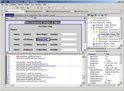

Jigloo SWT/Swing GUI Builder for
Eclipse and WebSphere
Jigloo SWT/Swing GUI Builder for
Eclipse and WebSphere
|  |
Introduction
Note: Jigloo is free for non-commercial use, but purchase of a Professional License is required for commercial use (after successfully evaluating Jigloo).CloudGarden's Jigloo GUI Builder is a plugin for the Eclipse Java IDE and WebSphere Studio, which allows you to build and manage both Swing and SWT GUIs. Jigloo creates and manages code for all the parts of the GUI as well as code to handle events, and shows you the GUIs as they are being built, allowing you to experiment with various properties of controls/components as well as the more complex features of the Swing GridBagLayout or SWT's FormLayout, for instance. Jigloo is straightforward, powerful and easy to use and can lead to a very large time-saving (over hand-coding) for GUI development and maintainance tasks. Also, because Jigloo is integrated with the Eclipse IDE the invaluable code-management features of Eclipse are immediately available to further modify the generated code.
Components
are added, layouts changed etc, by selecting from a component/layout
palette, or by options in the
right-click context menus. They can be resized and dragged about in the
form editor and in the outline view, and their properties, layout
constraints and event handlers can be
changed easily in the "GUI Properties" view. Multiple components can be
selected at the same time and properties, layouts etc changed on all
selected components at the same time, making widespread changes easy to
perform. The class of a component can also be easily changed (eg, from
a Composite to a Group, a combo-box to a text field, or to any custom
class). There are buttons in the form editor to provide a quick preview
of the form (to test it's "handling") or to actually run the generated
code. Custom classes can be added to forms, and JavaBeans with
Customizers and custom properties are supported.
A basic knowledge of the Swing and SWT components is useful, but not essential - and the javadoc can be easily accessed (by a right-click option) directly from the GUI editor.